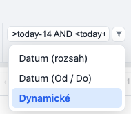
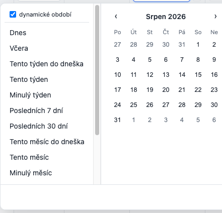
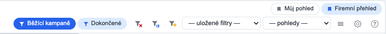
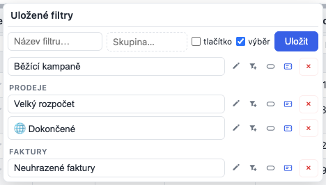

Uživatelská příručka
Jak ovládat tabulku Lattice přímo v aplikaci — řazení, filtrování, seskupení, editace, export a spousta dalšího. Psáno pro člověka, který tabulku vidí na obrazovce; instalaci ani programování řešit nemusíš.
Výslovnost: Lattice [ˈlætɪs] — zhruba „LE-tys" s důrazem na první slabiku (zní skoro jako anglické lettuce, hlávkový salát).
1Přehled tabulky
Tabulka má záhlaví s názvy sloupců, pod ním volitelný řádek filtrů, samotná data a dole patičku: vlevo „Zobrazeno X-Y z N" a pod tím verze Lattice, vpravo stránkování. Vpravo nahoře jsou nástrojové ikony:
Když něco filtruješ, N je počet vyfiltrovaných řádků a text to přizná: „Zobrazeno 1-50 z 21 001 řádků (filtrováno z celkem 22 504)". Je to nejrychlejší způsob, jak si všimnout filtru, na který jsi zapomněl.
 Rozšířený filtr (trychtýř se žlutým plusem) — složené podmínky A/NEBO. Tuhle ikonu vidíš standardně. Viz sekce Rozšířený filtr.
Rozšířený filtr (trychtýř se žlutým plusem) — složené podmínky A/NEBO. Tuhle ikonu vidíš standardně. Viz sekce Rozšířený filtr. Sloupce — dialog pro viditelnost, pořadí, ukotvení, seskupení a pohledy. Viz Dialog „Sloupce".
Sloupce — dialog pro viditelnost, pořadí, ukotvení, seskupení a pohledy. Viz Dialog „Sloupce". Nastavení tabulky (ozubené kolo) — vzhled a chování celé tabulky. Viz Nastavení tabulky.
Nastavení tabulky (ozubené kolo) — vzhled a chování celé tabulky. Viz Nastavení tabulky. Zrušit všechny filtry (trychtýř s červeným křížkem) — objeví se jen tehdy, když je nějaký filtr aktivní. Jedním klikem smaže všechny filtry.
Zrušit všechny filtry (trychtýř s červeným křížkem) — objeví se jen tehdy, když je nějaký filtr aktivní. Jedním klikem smaže všechny filtry.-
Uložené filtry (trychtýř s disketou) — uloží „naklikané" filtry z hlavičky pod názvem (jako tlačítko a/nebo do výběru, lokálně/globálně) a zároveň spravuje všechny uložené filtry (použít, upravit, smazat). Objeví se, jakmile filtruješ nebo máš něco uloženého. Viz Ukládání a sdílení filtrů.

2Řazení sloupců
Klikni na záhlaví sloupce — data se seřadí vzestupně (▲). Další klik přepne na sestupně (▼), třetí klik řazení zruší.

Vícenásobné řazení
Podrž Shift a klikni na další sloupec — přidá se jako druhé kritérium (u čísla se ukáže pořadí 1, 2, …). Tak seřadíš třeba nejdřív podle regionu a v rámci něj podle rozpočtu.
Výchozí řazení
Chceš, aby tabulka byla seřazená hned po otevření? Nastav si výchozí řazení v Nastavení tabulky (ozubené kolo ⚙) → záložka Sloupce a řádky → položka „Výchozí řazení". Z nabídky vybereš sloupec a směr (↑ vzestupně / ↓ sestupně), nebo „Bez řazení".

3Přesouvání sloupců
Přímo v tabulce
Klikni a drž levé tlačítko na názvu sloupce a táhni ho vlevo/vpravo. Během tažení se u cílového sloupce ukáže modrá svislá linka — přesně tam sloupec zapadne, když tlačítko pustíš.

V dialogu „Sloupce"
Totéž jde i v dialogu „Sloupce" (ikona ⊟) — přetáhni řádek sloupce za úchyt ⋮⋮ nahoru/dolů. Modrá vodorovná linka ukazuje, mezi které sloupce se řádek vloží.

4Šířka a ukotvení sloupců
Šířka
Najeď na pravý okraj záhlaví — kurzor se změní na obousměrnou šipku. Tažením šířku měníš. Dvojklik na okraj přizpůsobí šířku jednoho sloupce obsahu.
Přizpůsobit šířku všem sloupcům naráz
V dialogu „Sloupce" (ikona ⊟) je nahoře tlačítko „Přizpůsobit šířku sloupců obsahu". Jedním klikem srovná šířku všech sloupců tak, aby se přesně vešel jejich obsah — úzké sloupce s oříznutým textem se roztáhnou, zbytečně široké se zúží.


Ukotvení (frozen)
Sloupec můžeš přišpendlit vlevo nebo vpravo — pak zůstane na místě, i když tabulku horizontálně scrolluješ. Ukotvíš ho špendlíkem 📌 v dialogu „Sloupce" (viz sekce Dialog „Sloupce"). Užitečné pro identifikátor nebo název, ať ho vidíš pořád.
5Filtry a typy filtrů
Pod záhlavím je u každého sloupce pole filtru. Do textového začni psát a v tabulce zůstanou jen odpovídající řádky — ostatní se skryjí (tabulka se nezmenší, jen se proberou řádky). Vedle pole je ikona trychtýře — klikem na ni zvolíš typ filtru:

Text
Zobrazí řádky, které zadaný text obsahují (nezáleží na velikosti písmen). Prefixem
! filtr obrátíš na „neobsahuje" (viz sekce Negace a operátory).

Výběr (jedna hodnota)
Místo psaní vybereš jednu hodnotu z rozbalovací nabídky (nabídka se sama poskládá z hodnot ve sloupci). Hodí se tam, kde je pár opakujících se hodnot — vlastník, stav, region…

Více hodnot (multiselect)
Jako Výběr, ale zaškrtneš víc hodnot najednou — zobrazí se řádky, které odpovídají kterékoli z nich. Zvolené hodnoty se ukážou jako „štítky" přímo v poli filtru.

Vyloučit více
Opak „Více hodnot": zaškrtnuté hodnoty se skryjí a v tabulce zůstane všechno ostatní. Hodí se, když chceš jen odklidit pár hodnot z cesty — třeba skrýt zrušené a dokončené kampaně a nechat všechny ostatní stavy, aniž bys je musel vyjmenovávat. Vybrané hodnoty jsou v poli vidět jako červené přeškrtnuté štítky (v nabídce mají křížek ✕ místo fajfky), dokud nic nevybereš, filtr nefiltruje. Řádky s prázdnou buňkou zůstávají zobrazené — nejsou vyloučené.
Číslo a Rozsah
U číselných sloupců máš dvě možnosti:
- Číslo — porovnání jednou hodnotou:
=5,>70,<10. - Rozsah — dvě pole Od–Do; zobrazí hodnoty mezi nimi.


Datum: „rozsah" vs „Od / Do"
U dat jsou tři režimy (třetí, Dynamické, je níže). Mezi prvními dvěma je důležitý rozdíl:
- Datum (rozsah) — jedno pole s kalendářem, kde vybereš celé období najednou (od–do). Vyžaduje obě hraniční data.
- Datum (Od / Do) — dvě samostatná pole; stačí vyplnit jen jedno (třeba jen „Od" = vše od daného data dál, nebo jen „Do" = vše do daného data).


Datum: Dynamické (vlastní výraz)
Třetí režim u data je Dynamické — do jednoho pole napíšeš vlastní podmínku s operátory
a relativními datumy. Hodí se na „posuvná okna", která platí i zítra, třeba
>today-14 AND <today+14 (posledních 14 dní a příštích 14 dní).
- Operátory:
>,<,>=,<=,=. - Datum: pevné (
2024-01-31) nebo relativní token —today,today+14,today-7,today+2w,today-1m,today+1y,now(jednotky d/w/m/y). Relativní datum se přepočítává podle dneška, takže uložený filtr zůstává platný i další dny. - Hranice období:
sow/eow(začátek/konec týdne, Po–Ne),som/eom(měsíc),soq/eoq(kvartál),soy/eoy(rok) — i s offsetem:sow-1w= minulý týden,eom-1m= konec minulého měsíce. - Spojky:
ANDaOR(přičemžANDváže těsněji nežOR). Např.<2025-01-01 OR >today.
Chybnou část výrazu tabulka tiše ignoruje (nechá filtr být, dokud ho nedopíšeš). Nemusíš syntaxi znát zpaměti — tlačítko „?" u pole nabídne hotová období (Dnes, Minulý týden, Tento měsíc…); klik je vyplní a rovnou použije. Režim Dynamické zvolíš trychtýřem u sloupce, stejně jako „Datum (rozsah)" a „Datum (Od / Do)".

>today-14 AND <today+14.Dynamická období v kalendáři („Datum (rozsah)")
I kalendářový režim Datum (rozsah) umí dynamické období. V dialogu je nahoře přepínač „dynamické období": když ho zapneš a klikneš na některé přednastavené období (Dnes, Minulý týden, Tento měsíc…), uloží se relativně místo pevných dat — takže uložený filtr zůstane platný i příště (za týden „Minulý týden" znamená zase minulý týden). V poli to pak poznáš podle ↻ a názvu období. Ruční výběr dnů v kalendáři zůstává pevný.

Kde jsou filtry (umístění)
Jestli jsou filtry v záhlaví sloupců (jako výše), nad tabulkou v samostatném panelu, jako jeden univerzální filtr, nebo vypnuté — to řídí Nastavení tabulky → Stránkování a filtry → „Umístění filtrů".

6Negace a operátory ve filtru
Textový filtr umí i opak: napiš na začátek vykřičník ! a filtr začne
znamenat „neobsahuje". Například !Bannery zobrazí vše kromě kampaní Bannery.

!Bannery ve sloupci Firma — zobrazí se vše, co „Bannery" neobsahuje. Vpravo nahoře přibyl trychtýř s křížkem (zrušit filtry).U číselných sloupců zadáš i porovnání: >70 (větší než 70),
<10, =5. U čísel a dat je navíc typ filtru Rozsah Od–Do
(přepneš ho trychtýřem u sloupce — viz předchozí sekce).
7Rozšířený filtr (A / NEBO)
Když jednoduché filtry v záhlaví nestačí, otevři Rozšířený filtr (ikona trychtýře s hvězdičkou/plusem v liště). Skládáš tu podmínky do logického stromu:

- Nahoře zvol A zároveň (vše) nebo NEBO (aspoň jedna).
- + Podmínka přidá pravidlo: vyber sloupec, operátor (obsahuje, =, >, …) a napiš hodnotu.
- + Skupina vloží vnořenou skupinu s vlastní logikou (třeba „A zároveň (X) a (Y NEBO Z)").
- Použít filtr aktivuje. Křížkem u řádku podmínku odebereš.
Složitější příklad
Řekněme, že chceš záznamy, kde je Kategorie „Email" nebo „Newsletter" a zároveň je Rozpočet buď pod 200 000, nebo nad 300 000. Potřebuješ tedy dvě skupiny „Nebo" spojené nadřazeným „A zároveň":
- Nahoře nech A zároveň (vše).
- + Skupina → uvnitř přepni na Nebo (aspoň jedno) a přidej dvě podmínky: Kategorie · rovná se · Email a Kategorie · rovná se · Newsletter.
- Znovu + Skupina → Nebo a dvě podmínky: Rozpočet · < menší než · 200000 a Rozpočet · > větší než · 300000.
- Použít. (Chceš-li si to schovat, dej dole Uložit pod názvem.)

Relativní datum (dnešek ± N)
U datových sloupců nemusíš psát pevné datum. Do hodnoty napiš token, který se přepočítá vždy podle aktuálního dne — uložený filtr tak zůstává platný i zítra:
today— dnešektoday+14— za 14 dní,today-7— před 7 dny (čísla ve dnech)- jednotky:
today+2w(týdny),today+1m(měsíce),today+1y(roky) now— teď včetně času (pro sloupce typu datum a čas)
Příklad „Zkušební doba končí do 14 dnů": A zároveň →
Konec zkušebky · ≥ větší nebo rovno · today a
Konec zkušebky · ≤ menší nebo rovno · today+14. Filtr ulož pod názvem a
můžeš ho i sdílet globálně — token je jen text, žádné pevné datum se do něj nezapíše.
Uložení filtru
Napiš dole název a klikni Uložit — filtr se objeví v rozbalovací nabídce „uložené filtry" nahoře a příště ho použiješ jedním klikem. Vymazat filtr vše vynuluje.
Vedle „Uložit" může být i zelené Uložit globálně (jen když to aplikace povolí) — takový filtr se sdílí všem uživatelům, ne jen tobě. Globální filtry poznáš v nabídce podle glóbu (🌐). Sdílené filtry ukládá a spravuje aplikace (stejně jako globální pohledy).
Při ukládání si zaškrtneš, kde se filtr má nabízet — jako tlačítko nad ikonami a/nebo ve výběru uložených filtrů (viz Ukládání a sdílení filtrů).
Zapnout / vypnout filtr u sloupce
V dialogu „Sloupce" (ikona ⊟) ikonou trychtýře u řádku sloupce zapneš nebo vypneš jeho filtr. Když je modrá, sloupec filtr má; když ji vyklikneš (zešedne), filtrovací pole u toho sloupce zmizí. Hodí se, když u některých sloupců filtrovat nechceš.

8Ukládání a sdílení filtrů
Filtry, které si často zapínáš, nemusíš pokaždé klikat znovu. Ulož si je pod názvem — pak je zapneš jedním klikem. Uložit jde obojí:
- „Naklikané" sloupcové filtry — to, co máš právě nastavené v řádku filtrů v hlavičce (klidně v několika sloupcích naráz). Uloží se jako snímek.
- Rozšířený filtr — složená podmínka A/NEBO z query-builderu.
Obojí se pak nabízí na stejném místě a chová se stejně, takže je můžeš míchat.
Uložit „naklikané" filtry z hlavičky — krok za krokem
- Nafiltruj si tabulku v řádku filtrů v hlavičce (jeden sloupec nebo víc).
- Vpravo nahoře klikni na ikonu trychtýře s disketou () — otevře se panel „Uložené filtry".
- Do pole „Název filtru…" napiš, jak se má filtr jmenovat.
- Volitelně vyplň „Skupina…" — třeba Prodeje nebo Faktury. Filtry se stejnou skupinou se pak v rozbalovací nabídce sdruží pod její název. Viz Skupiny v nabídce.
- Zaškrtni, kde se má nabízet: tlačítko (pilulka v řadě s ikonami, hned vlevo od nich) a/nebo výběr (rozbalovací nabídka za ikonami). Výběr je předzaškrtnutý; klidně zaškrtni obojí. Když odškrtneš obojí, filtr bude jen v tomhle panelu.
- Ulož:
- Uložit — lokálně, jen pro tebe (uloží se v tvém prohlížeči).
- Uložit globálně (zelené) — globálně, sdílené všem uživatelům. Tlačítko je vidět, jen když to aplikace umožňuje.
Dokud v hlavičce nic nefiltruješ, není co ukládat — panel místo pole s názvem ukáže jen nápovědu a seznam už uložených filtrů.
Uložit rozšířený filtr
- Otevři Rozšířený filtr (trychtýř se žlutým plusem) a poskládej podmínky.
- Dole do pole „Název filtru…" napiš název, vedle volitelně „Skupina ve výběru…" (viz Skupiny v nabídce) — se skupinami podmínek A zároveň / Nebo v builderu to nemá nic společného.
- Zaškrtni tlačítko a/nebo výběr (stejná volba jako u naklikaných filtrů).
- Uložit = lokálně jen pro tebe, Uložit globálně = pro všechny.
Lokálně vs. globálně
- Lokální filtr má jen tvůj prohlížeč. Nikdo jiný ho nevidí a na jiném počítači ho mít nebudeš.
- Globální filtr vidí všichni uživatelé aplikace — ukládá ho aplikace do své databáze. Poznáš ho podle glóbu 🌐 v nabídce a podle modré ikony na tlačítku. Ukládat globálně jde jen tam, kde to aplikace zapnula (jinak zelené tlačítko není vidět).
Kde se filtr ukáže: „tlačítko" a „výběr"
- tlačítko — filtr je pilulka v řadě nad ikonami vpravo v záhlaví tabulky. Klik zapne, další klik vypne; zapnutý je modře vyplněný. Ideální na pár filtrů, které používáš pořád.
- výběr — filtr je položkou rozbalovací nabídky „— uložené filtry —" hned za filtračními ikonami. Hodí se, když je uložených filtrů hodně a nechceš mít záhlaví plné tlačítek.
- obojí — filtr je i tlačítkem, i v nabídce.
Řadu tlačítek i nabídku sdílí filtry s pohledy a je v nich poznat, co je co — bez popisků, aby zabraly co nejmíň místa:
| Co to je | Ikona | Vzhled | Klik |
|---|---|---|---|
| Můj pohled | záložka 🔖 | šedá ikona na bílé | použije pohled (druhý klik = výchozí zobrazení) |
| Globální pohled | záložka 🔖 | modrá ikona na světle modré | totéž, jen ho vidí všichni |
| Můj filtr | trychtýř | šedá ikona na bílé | zapne / vypne filtr |
| Globální filtr | trychtýř | modrá ikona na světle modré | totéž, jen ho vidí všichni |
Kde co v záhlaví najdeš:
- Tlačítka filtrů jsou v řadě s ikonami, hned vlevo od filtračních ikon — tedy u toho, co ovládají.
- Tlačítka pohledů jsou o řádek výš. Když žádný pohled jako tlačítko označený nemáš, řádek se vůbec nevykreslí a záhlaví zůstane jednořádkové.
- Rozbalovací nabídky jsou dvě vedle sebe za ikonami: vlevo „— uložené filtry —", vpravo „— pohledy —" (každá je vidět, jen když v ní něco je).

Skupiny v nabídce („Prodeje", „Faktury"…)
Když je uložených filtrů (nebo pohledů) hodně, dá se nabídka rozčlenit do skupin. Vedle pole s názvem je políčko „Skupina…" — napiš do něj libovolný název skupiny, třeba Prodeje. Všechno se stejnou skupinou se v rozbalovací nabídce sdruží pod její nadpis:
— uložené filtry —
Všechny obchodní případy ← bez skupiny (zůstává nahoře)
Bordel
PRODEJE
Prodeje (všechny výhry)
Prodeje potvrzené
FAKTURY
Neuhrazené faktury
- Napovídá — jakmile nějakou skupinu použiješ, políčko ji příště nabídne (stačí začít psát). Napsat jde ale i úplně novou.
- Bez skupiny — položka se nabízí normálně, jen nad skupinami. Hodí se pro to nejpoužívanější („Všechno", „Moje").
- Pořadí skupin se neabecedí — jdou tak, jak vznikly. Chceš-li jiné pořadí, ulož položky ve výsledném pořadí (nebo skupinu přejmenuj).
- Skupinu jde změnit i dodatečně — u uloženého filtru klikni na tužku (nebo dvojklik na název): vedle názvu se objeví i políčko skupiny. Vyprázdněním ji zrušíš. U pohledu ho ulož znovu pod stejným názvem s jinou skupinou.
- Tlačítek se skupiny netýkají — pilulky v záhlaví zůstávají v jedné řadě. Skupiny mají smysl v rozbalovacích nabídkách.
Stejné políčko je i v dialogu „Sloupce" u pohledů a v patičce rozšířeného filtru. V panelech se skupiny ukazují jako nadpis nad položkami, stejně jako v nabídce.
Upravit uložený filtr (změnit, co filtruje)
Uložený filtr se needituje ve formuláři — upravíš ho tím, že si tabulku nafiltruješ znovu, jak chceš, a filtr tím přepíšeš:
- Zapni uložený filtr, který chceš upravit — klikem na jeho tlačítko, nebo výběrem z nabídky „— uložené filtry —". Jeho hodnoty se vrátí do políček v hlavičce a tlačítko zmodrá (= tabulka je nafiltrovaná přesně podle něj).
- Uprav filtrování přímo v tabulce — přepiš hodnoty v hlavičce, přidej filtr v dalším sloupci nebo nějaký zruš.
- Klikni vpravo nahoře na ikonu trychtýře s disketou → panel „Uložené filtry".
- V seznamu u toho filtru klikni na disketu. Uložený filtr se přepíše tím, co máš
právě naklikané.
Proč jeho název v tu chvíli není modrý? Modré zvýraznění znamená „tabulka je nafiltrovaná přesně podle tohohle uloženého filtru". Jakmile filtrování v kroku 2 změníš, přestane to sedět a zvýraznění zhasne — je to správně a je to i vodítko, že máš nové nastavení, které se ještě neuložilo. Po kliknutí na disketu se zvýraznění zase rozsvítí.
- Volitelně klikni na tužku a filtr přejmenuj (Enter uloží, Esc zruší).
Co zůstane: název (dokud ho sám nezměníš), rozsah (lokální/globální) i to, kde se filtr nabízí (tlačítko / výběr). Mění se jen to, co filtr filtruje — takže tlačítko v záhlaví zůstane na svém místě a od téhle chvíle filtruje nově.
Dokud v hlavičce nic nefiltruješ, je disketa nedostupná (šedá) — nebylo by co uložit. U filtru z rozšířeného filtru je místo diskety ikona trychtýře s plusem: otevře podmínky v query-builderu, kde je upravíš a uložíš pod stejným názvem.
Přejmenovat, přepnout zobrazení, smazat
Všechno je v panelu „Uložené filtry" (ikona trychtýře s disketou). V seznamu jsou všechny uložené filtry — i ty, které nemáš jako tlačítko:
- Zapnout/vypnout — klik na název.
- Přejmenovat (a případně změnit skupinu) — tužka v řádku (nebo dvojklik na název): objeví se políčko s názvem a vedle něj políčko skupiny. Přepiš a potvrď Enterem (Esc zruší). Obsah filtru se nemění.
- Přepsat obsah — disketa (viz postup výše).
- Kde se nabízí — dva přepínače: pilulka = tlačítko, seznam se šipkou = výběr. Vyplněné = zapnuté.
- Smazat — × na konci řádku.
Rychlejší cesta k témuž: pravý klik na tlačítko filtru v řadě nad ikonami — menu nabídne zapnout/vypnout, načíst do hlavičky a upravit, Zobrazit jako tlačítko, Zobrazit ve výběru a Smazat. Funguje i na tlačítkách pohledů.
Co je „snímek" sloupcových filtrů
Uložené „naklikané" filtry jsou snímek hodnot z hlavičky. Když ho použiješ, filtry se vrátí zpět do políček v hlavičce — takže je vidíš a můžeš je po sloupcích doladit (na tom stojí i postup s úpravou výše). Uloží se i to, jaký typ filtru jsi měl u dotčených sloupců přepnutý (třeba „Dynamické" u data).

9Dialog „Sloupce"
Ikonou ⊟ vpravo nahoře otevřeš správu sloupců. Je to hlavní místo, odkud řídíš, co a jak se v tabulce zobrazuje: viditelnost, pořadí, ukotvení, filtry, souhrny, formát, seskupení i pohledy.

Ikony v hlavičce dialogu
-
Přizpůsobit šířku sloupců obsahu — srovná šířku všech sloupců podle obsahu (viz sekce Šířka a ukotvení).
-
Zrušit všechny filtry — smaže všechny aktivní filtry naráz.
-
Obnovit výchozí — vrátí sloupce (viditelnost, pořadí, šířky…) do výchozího stavu a zároveň zruší seskupení řádků (to se zapíná tady u sloupce a sloupce přeskupuje). Ostatní volby z Nastavení tabulky (motiv, velikost stránky, souhrnný řádek…) zůstávají — ty se resetují jinde.
Uložené pohledy
Pohled je pojmenované nastavení tabulky — sloupce, jejich pořadí a šířky, řazení, filtry a (podle zaškrtnutí) i nastavení tabulky včetně seskupení a souhrnů. Do pole „Název pohledu…" napiš jméno a klikni na ikonu záložky () — pohled se uloží lokálně. Uložené pohledy se pak nabízejí k výběru a jedním klikem si tabulku přepneš do uloženého stavu.
Globální pohled: vedle záložky může být i globus (jen když to aplikace umožní) — tím uložíš pohled globálně, sdílený všem uživatelům (v nabídce s glóbem 🌐). Aplikace může mít i pohledy nastavené správcem. Fungují stejně jako tvoje vlastní.
Kde se pohled nabízí: vedle pole s názvem jsou zaškrtávátka tlačítko a výběr — pohled se pak ukáže jako pilulka v řadě nad ikonami, resp. v rozbalovací nabídce „uložené pohledy". U už uloženého pohledu jsou tytéž dva přepínače vpravo v jeho řádku (vyplněné = zapnuté), takže to jde kdykoli změnit. × pohled smaže. Podrobně v sekci Uložené pohledy.
Hledat sloupec: když má tabulka hodně sloupců, do pole „Hledat sloupec…" napiš část názvu a seznam se zúží — rychle tak najdeš ten, který chceš zapnout/vypnout.
Co přesně se do pohledu ukládá a k čemu je to praktické — viz sekce Uložené pohledy.
Ikony u každého sloupce
U každého sloupce je vlevo úchyt ⋮⋮ (tažením změníš pořadí — viz Přesouvání sloupců) a zaškrtávátko (viditelnost). Dvojklikem na název sloupec přejmenuješ (Enter uloží, Esc zruší). Vpravo pak řada ikon:
- 📌
Ukotvit (vlevo/vpravo) — přišpendlí sloupec k okraji, ať zůstane vidět i při horizontálním scrollu (viz Ukotvení).
-
Zobrazit / skrýt filtr — zapne nebo vypne filtrovací pole u sloupce (viz Zapnout / vypnout filtr).
-
Skupina sloupce — spojí sousední sloupce pod společné nadřazené záhlaví (seskupení sloupců). V nabídce skupiny je i barva záhlaví skupiny (ikona A) a zrušení skupiny (×). Skupinu jde v záhlaví sbalit ikonou − (rozbalit +) — viz Skupiny a vzhled sloupců.
- A
Barva záhlaví sloupce — pozadí a písmo hlavičky. Picker má barevné kolo, jezdec jasu a přednastavené (Bootstrap) kombinace. Viz Skupiny a vzhled sloupců.
- ¶
Formát buňky — vzhled těla sloupce: zarovnání, tučné / kurzíva / podtržené / přeškrtnuté a barva písma i pozadí. Viz Skupiny a vzhled sloupců.
-
Otočení hlavičky — natočí text v záhlaví (vodorovně / svisle). Hodí se u úzkých sloupců s dlouhým názvem.
- Σ
Souhrn sloupce — zapne pod sloupcem (nebo vpravo za řádkem) výpočet. Nabídka se liší podle typu: u čísel Součet, Průměr, Min, Max, Počet; u textu jen Počet (viz obrázky níže). Souhrny se ukážou, až když v Nastavení tabulky zapneš souhrnný řádek (viz Souhrny a mezisoučty).
- 0.0
Formát sloupce — u čísel, měn a dat (ikona 0.0): Podle tabulky (globální) nebo Vlastní formát; tady je i zapnutí barevné škály (semafor) — podmíněné formátování, podrobně v sekci Formáty a podmíněné formáty.
U Ano/Ne sloupců (boolean) je místo toho ikona ✓ — zvolíš zobrazení: ✓/✕, Ano/Ne, 1/0, ✅/❌, 👍/👎 nebo vlastní text, s volbou barvení. -
Seskupovat řádky — seskupí řádky podle hodnoty tohoto sloupce (seskupení řádků). U datumových sloupců nabídne úrovně (rok, kvartál…). Podrobně v sekci Seskupení. Seskupené sloupce se samy přesunou na začátek a ukotví vlevo.
Souhrn: nabídka podle typu sloupce


10Skupiny a vzhled sloupců
Sloupce můžeš sdružit do skupin, skupiny sbalit, a jak skupinám, tak jednotlivým sloupcům dát vlastní barvy záhlaví i formát buňky. Vše se nastaví v dialogu Sloupce a pamatuje se.
Skupiny sloupců
U sloupce klikni na ikonu Skupina a vyber existující skupinu, nebo napiš název nové (nová se nabízí jen u sloupce, který zatím skupinu nemá — sloupec může být jen v jedné). Sousední sloupce téže skupiny se spojí pod společné záhlaví. V nabídce skupiny je i barva (A) a zrušení skupiny (×) — bezpečně tady, ne přímo v gridu.
Sbalení skupiny
V záhlaví skupiny je ikona − (sbalit) / + (rozbalit). Sbalená skupina se schová do úzkého proužku jen se šířkou ikony — přehledné, když skupinu zrovna nepotřebuješ.

Barvy záhlaví
Ikona A u sloupce (a v nabídce skupiny) otevře picker barvy. Ve výchozím tabu je barevné kolo a jezdec jasu; druhý tab Palety nabízí přednastavené kombinace à la Bootstrap — plné i jemné (16 kombinací) — i vlastní volbu. Picker si navíc pamatuje naposledy použité barvy, takže je máš rychle po ruce. Sloupec bez vlastní barvy zdědí barvu své skupiny; písmo se u pohledů a kola dopočítá tak, aby bylo čitelné.

Formát buňky
Ikona ¶ u sloupce otevře Formát buňky — vzhled těla sloupce: zarovnání (vlevo / na střed / vpravo), tučné, kurzíva, podtržené, přeškrtnuté a barva písma i pozadí (stejný picker s kolem i paletami).

11Počítaný sloupec (vlastní vzorec)
Občas potřebuješ sloupec, který v datech není — třeba Celkem = cena × množství, marži, nebo celé jméno složené z více polí. Takový sloupec si vytvoříš přímo v tabulce zadáním vzorce — nemusíš nic programovat.
Jak na to
- Otevři dialog „Sloupce" (ikona ⊟ vpravo nahoře).
- Úplně dole klikni na „＋ Přidat počítaný sloupec".
- Vyplň Název a napiš Vzorec. Názvy polí do vzorce vkládáš klikáním na tlačítka pod ním (ID, Produkt, Cena…). Pod polem hned vidíš živý náhled výsledku na prvním řádku (nebo upozornění na chybu). Typ (číslo / text / datum) se sám nastaví podle výsledku vzorce — jen když chceš, změníš ho ručně.
- Klikni Uložit — sloupec se přidá do tabulky.

cena * mnozstvi — pole se vkládají klikáním, náhled ukazuje výsledek (2 370).
Co vzorec umí
- Počítat —
cena * mnozstvi,(a + b) / 2; operátory+ − * / %a závorky. - Spojovat text —
jmeno + ' ' + prijmeninebomesto + ', ' + psc. - Rozhodovat (když–pak) —
if(stav == 'hotovo', '✓', '—'); porovnání== != < <= > >=. - Datum —
days(start, konec)(počet dní),year(datum),age(narozeni)(věk). - Funkce —
round,min,max,upper,lower,len,coalescea další.
Nemusíš nic znát zpaměti — reference funkcí
V editoru je rozbalovací sekce „ƒ Funkce" se seznamem všech funkcí rozdělených do kategorií (Čísla, Text, Logika, Datum). U každé vidíš zápis (jaké má argumenty) i krátký popis. Nahoře je vyhledávání — napiš třeba „dat" a zůstanou jen datumové funkce. Kliknutím funkci rovnou vložíš do vzorce a kurzor skočí dovnitř závorek.

12Nastavení tabulky
Ozubené kolo ⚙ vpravo nahoře otevře Nastavení tabulky — vzhled a chování celé tabulky, rozdělené do záložek.

- Vzhled — motiv (světlý/tmavý/…), velikost písma, hustota řádků, barvy škály (semafor) a přepínač „Verze knihovny v patičce". Barvy se vybírají stejným pickerem s kolem jako u záhlaví.
- Rozvržení — způsob šířky sloupců, zalamování textu v buňkách, zalamování názvů sloupců (nezávisle na datech — dlouhý název se složí do dvou řádků a auto-fit šířky s tím počítá), odkazy v nové kartě…
- Stránkování a filtry — umístění stránkování, velikost stránky, umístění filtrů.
- Sloupce a řádky — číslování řádků, souhrnný řádek, seskupení (úrovně, opakování hodnot), výběr.
- Formát hodnot — jak se zobrazují čísla, měny, data (viz sekce Formáty).
- Vlastní úpravy — písmo a barvy tabulky přes vlastní CSS proměnné.
- O Lattice — co Lattice je, autor a licence, odkazy na uživatelskou příručku, ukázky a dokumentaci a GitHub, a hlavně seznam vydání: u každého shrnutí a po rozkliknutí i body změn. To, které právě používáš, je zvýrazněné a rovnou rozbalené; dole je odkaz na úplný changelog.
Jakou verzi Lattice používám?
Verze je v patičce tabulky pod „Zobrazeno X-Y z N" (např. Lattice 1.14.0) — ať víš, s čím pracuješ, a máš to po ruce, když něco hlásíš. Když ji tam mít nechceš, vypni ji v Nastavení tabulky → Vzhled → „Verze knihovny v patičce".
I s vypnutou patičkou verzi vždycky najdeš vlevo dole v dialogu „Nastavení tabulky" a nahoře v záložce „O Lattice" — tam je i seznam, co které vydání přineslo, takže si ověříš, jestli máš tu verzi, kterou chceš používat.
13Uložené pohledy
Pohled je pojmenované nastavení celé tabulky. Nejdřív si tabulku naklikáš přesně tak, jak ji chceš — zvolíš viditelnost a pořadí sloupců, jejich šířky, nastavíš filtry a řazení, případně i seskupení řádků a souhrny — a celý tenhle stav uložíš pod názvem. Když pak pohled použiješ, tabulka se do toho stavu jedním klikem celá vrátí.
Pozn.: v programátorské dokumentaci a v API se pohledům říká presety
(preset) — je to totéž.
Co se do pohledu uloží
Nad polem s názvem si zaškrtneš, co má pohled nést — tři volby, klidně jen jednu (aspoň jedna musí zůstat zapnutá):

- Sloupce — pořadí zleva doprava, viditelnost (co je zapnuté / skryté), šířky a ukotvení, souhrnné funkce sloupce, formát, podmíněný formát (semafor), otočení hlavičky, barvy záhlaví a skupiny sloupců.
- Filtry a řazení — všechny nastavené filtry včetně jejich hodnot (i to, u kterých sloupců je filtrovací pole zapnuté) a nastavené řazení (i víceúrovňové).
- Nastavení tabulky — seskupení řádků (i víceúrovňové a podle částí data), souhrnný řádek, mezisoučty skupin, velikost stránky, umístění filtrů, vzhled (motiv, hustota, písmo) i formát hodnot.
K čemu je to praktické
- Výběr sloupců pro export — naklikáš si jen ty sloupce (a pořadí), které chceš vyvézt, uložíš jako pohled a máš je kdykoli po ruce.
- Uložená kombinace filtrů — poskládáš si třeba „aktivní kampaně po termínu" a příště ji zapneš jedním klikem, aniž bys filtry klikal znovu.
- Režimy práce — přepínání mezi pohledy jako Přehled, Jen po termínu, Podle kategorie.
- Uložený způsob zobrazení — pohled jen s Nastavením tabulky si zapamatuje třeba „seskupit po měsících + zapnout mezisoučty a souhrnný řádek"; použiješ ho na jakýkoli výběr dat, aniž by ti přepsal sloupce nebo filtry.
Vytvořit pohled — krok za krokem
- Naklikej si tabulku přesně tak, jak ji chceš mít — sloupce, jejich pořadí a šířky, řazení, filtry, seskupení, souhrny, vzhled.
- Otevři dialog „Sloupce" (ikona ⊟ vpravo nahoře). Pohledy jsou hned nahoře.
- U „Uložit do pohledu:" zaškrtni, co má pohled nést — Sloupce, Filtry a řazení, Nastavení tabulky (aspoň jedno musí zůstat).
- Do pole „Název pohledu…" napiš název; vedle volitelně „Skupina…", chceš-li pohled zařadit v nabídce pod společný nadpis (viz Skupiny v nabídce).
- Zaškrtni, kde se má pohled nabízet: tlačítko a/nebo výběr (u pohledů není předzaškrtnuté nic — pak zůstane jen tady v dialogu).
- Ulož:
- ikona záložky () — lokálně, jen pro tebe (uloží se v tvém prohlížeči),
- ikona globusu — globálně, sdílené všem uživatelům; je vidět, jen když to aplikace umožňuje.
Uložený pohled se objeví v seznamu nahoře v dialogu — klik na název ho použije.
Pohled po ruce: „tlačítko" a „výběr"
Pohled nemusí zůstat schovaný v dialogu „Sloupce". Volbu máš u ukládání (krok 5) a u každého už uloženého pohledu jsou vpravo v jeho řádku dva stejné přepínače, takže ji jde kdykoli změnit bez ukládání znovu:
- tlačítko (ikona pilulky) — pohled se zobrazí jako pilulka se záložkou 🔖 ve vlastní řadě nad ikonami vpravo v záhlaví (řada je tam, jen když nějaký takový pohled máš). Jeden klik = použít; použitý pohled je zvýrazněný a druhý klik tě vrátí na výchozí zobrazení (sloupce a nastavení tabulky jako na začátku). Filtry a řazení přitom zůstanou, jak je máš — vypínáš zobrazení, ne výběr dat.
- výběr (ikona seznamu se šipkou) — pohled se nabídne v rozbalovací nabídce „— pohledy —", která je v řadě ikon vpravo vedle nabídky uložených filtrů. Hodí se, když máš pohledů hodně — a dají se v ní ještě sdružit do skupin. Vyprázdněním nabídky se vrátíš na výchozí zobrazení.
- nic zaškrtnutého (výchozí) — pohled zůstane jen v dialogu „Sloupce".
Řadu tlačítek i nabídku sdílí pohledy s uloženými filtry; poznáš je podle ikony (záložka = pohled, trychtýř = filtr) a podle barvy (šedá = jen tvoje, modrá = globální) — viz přehledová tabulka.
Upravit, přejmenovat nebo smazat pohled
Pohled se — stejně jako filtr — upravuje tak, že si tabulku naklikáš znovu a uložíš ho pod stejným názvem (původní se přepíše, tlačítko i volby zůstanou):
- Použij pohled (klik na jeho tlačítko nebo na název v dialogu „Sloupce").
- Uprav tabulku, jak potřebuješ — sloupce, řazení, filtry, seskupení…
- V dialogu „Sloupce" napiš stejný název a ulož (záložka = lokálně, globus = globálně). Rychlejší cesta: pravý klik na tlačítko pohledu → Upravit — dialog se otevře s předvyplněným názvem i volbami, takže jen potvrdíš uložení.
- Přejmenovat = uložit pod novým názvem a starý pohled smazat (× v jeho řádku).
- Smazat — × na konci řádku pohledu v dialogu „Sloupce" (nebo pravý klik na tlačítko → Smazat).
- Kde se nabízí — dva přepínače v řádku pohledu (nebo pravý klik na tlačítko → Zobrazit jako tlačítko / Zobrazit ve výběru).
14Seskupení řádků (i podle data)
Řádky můžeš seskupit podle hodnoty sloupce — třeba všechny kampaně jedné kategorie pohromadě. Zapneš to v dialogu „Sloupce" (ikona ⊟): u sloupce klikni na ikonu Seskupovat řádky (seznam vpravo). Seskupovat lze i víceúrovňově (skupina ve skupině). Seskupený sloupec se sám přesune na začátek a ukotví vlevo.
Podle data — rok, kvartál, měsíc…
Tohle je klíčová vychytávka: datumový sloupec jde seskupit podle úrovní — rok, kvartál, měsíc, týden, den v týdnu, den v měsíci, hodina, minuta — a klidně víc naráz. U datumového sloupce otevře ikona seskupení checkbox nabídku, kde si zaškrtneš úrovně (např. Rok + Kvartál). Skupiny se seřadí chronologicky.

Dvě podoby zobrazení
Jak skupiny vypadají, přepneš v Nastavení tabulky → Sloupce a řádky → „Úrovně seskupení":
1) Vedoucí sloupce — úrovně jsou ukotvené sloupce vlevo (Rok, Kvartál, …), hodnota u každého řádku; při horizontálním scrollu zůstanou stát.

2) Vnořené hlavičky — skupiny jsou sbalitelné lišty (klik = sbalit/rozbalit). Vlevo je pořád ukotvený sloupec skupiny; jestli se v něm hodnota opakuje u každého řádku, nebo je jen v liště, řídí přepínač „Opakovat hodnoty skupin v řádcích".

Šířka vedoucích sloupců
Sloupce, podle kterých seskupuješ, se přesunou doleva a ukotví se. Jejich šířku měníš stejně jako u kterýchkoli jiných — tažením pravého okraje v záhlaví, dvojklik na oddělovač šířku přizpůsobí obsahu. Nastavení se pamatuje a uloží se i do pohledu; „Obnovit výchozí" v dialogu „Sloupce" ho vrátí zpět.
Řazení a rušení skupin
Skupiny seřadíš šipkou ⇅ v liště skupiny (přepíná vzestupně/sestupně). Řádky uvnitř skupin řadíš klikem na běžné hlavičky sloupců. Seskupení zrušíš stejnou ikonou seskupení v dialogu „Sloupce" (odškrtnutím).
15Inline editace
Pokud to aplikace povolí, hodnotu upravíš přímo v buňce — dvojklik (nebo Enter na vybrané buňce) ji přepne do editace. Napiš novou hodnotu a potvrď Enter; Esc úpravu zruší.

Podle typu sloupce se editor liší — u výběrových sloupců vyskočí nabídka, u data kalendář, u ano/ne přepínač. Když má sloupec pravidla (např. povinné, rozsah), neplatnou hodnotu nepřijme a upozorní na chybu.
16Výběr buněk a kopírování
Buňky můžeš označit jako v tabulkovém procesoru: klikni do buňky a táhni přes obdélník (nebo drž Shift a klikni na protilehlý roh). Označený rozsah se podbarví a dole se ukáže jeho souhrn.

Označené buňky zkopíruješ do schránky přes Ctrl/⌘ + C a vložíš třeba do Excelu. Souhrn dole je praktický pro rychlou kontrolu (kolik to je celkem, průměr…).
17Klik na řádek, menu a popup
Klik na řádek
V mnoha aplikacích má kliknutí na řádek akci — třeba otevře detail záznamu. Jestli řádek reaguje, poznáš podle toho, že se při najetí zvýrazní a kurzor je „ručička". Co přesně klik udělá, závisí na aplikaci.
Kontextové menu (pravý klik)
Pravým tlačítkem na řádek/buňku může vyskočit kontextové menu s akcemi.

Popup nad buňkou
Některé buňky mají malý plovoucí panel — otevře se kliknutím do buňky nebo ikonkou ⓘ v záhlaví. Ukáže třeba detail, poznámku nebo doplňující akce, aniž bys opustil tabulku.
18Hromadné úpravy (výběr více řádků)
Vlevo je (pokud to aplikace zapne) sloupec s checkboxy. Zaškrtni řádky, které chceš zpracovat najednou — nahoře se objeví lišta hromadných akcí s tím, co lze s výběrem udělat.

Vybrat celou stránku, nebo úplně všechno?
Checkbox v záhlaví označí/odznačí celý zvolený rozsah a šipka hned vedle něj otevře nabídku. Klik na volbu rovnou vybírá (a zároveň určí, s čím pak pracuje hlavičkový checkbox); zvýrazněná je ta volba, jejíž rozsah máš právě celý vybraný:
- Stránka (N) — vybere řádky, které jsou právě vidět. V závorce je jejich skutečný počet, takže na poslední stránce uvidíš třeba Stránka (15).
- Všechny záznamy (N) — vybere všechno, co odpovídá filtru, i to, co je na dalších stránkách. V závorce je počet všech takových záznamů (např. 365, i když jich je na stránce 50). Na dalších stránkách uvidíš řádky zaškrtnuté, jakmile na ně přejdeš; jednotlivé řádky můžeš kdykoli odškrtnout a z výběru vypadnou.
- Invertovat výběr — co bylo zaškrtnuté, se odškrtne a naopak.
- Zrušit výběr — odznačí všechno.
19Stromové zobrazení
Když jsou data hierarchická (např. organizační struktura, kategorie a podkategorie), tabulka je ukáže jako strom: v prvním sloupci je rozbalovací šipka a odsazení podle úrovně. Klik na šipku větev rozbalí/sbalí.

Nahoře jsou tlačítka Sbalit vše / Rozbalit vše a ovládání úrovně (rozbalit strom jen do určité hloubky). Filtry i hledání fungují i ve stromu — zachovají cestu k nálezu (rodiče) a větev se shodou se rozbalí.
20Přesouvání řádků
Pokud to aplikace zapne (a struktura dat to dovolí), můžeš měnit pořadí řádků myší. Vlevo v každém řádku je úchyt ⠿ — chytni ho a přetáhni řádek nad nebo pod jiný. Při tažení ukazuje modrá linka, kam řádek spadne. Nové pořadí si aplikace uloží.
1) Ploché řádky (změna pořadí)
Nejjednodušší případ: přetáhneš řádek nad/pod jiný a tím změníš jeho pozici v seznamu. Ostatní řádky se přečíslují.

2) Přesun mezi skupinami
Když jsou řádky seskupené (viz Seskupení), přetažením řádku do jiné skupiny mu rovnou změníš hodnotu, podle které se seskupuje. Cíl označíš buď puštěním na hlavičku skupiny, nebo mezi její řádky.

3) Strom — přesun uzlu i s podřízenými
Ve stromovém zobrazení vezme tažení uzlu celou jeho větev. Podle toho, kam ho pustíš, se stane jedno ze dvou:
- Nad / pod jiný řádek (u jeho horního/dolního okraje) — přeuspořádání mezi sourozenci.
- „Dovnitř" jiného řádku (na jeho střed) — uzel se přesune pod tento řádek jako jeho podřízený.

21Rozbalovací detail řádku
Některé řádky umí rozbalit panel s detailem pod sebou (tzv. master-detail). Poznáš je podle šipky ▸ na začátku řádku (obvykle ve sloupci ID). Klikem na šipku se pod řádkem otevře panel se souvisejícími údaji, které se nevejdou do sloupců; dalším klikem ho zavřeš.

Stejný mechanismus se používá i u responzivního skládání sloupců: na úzké obrazovce se přetečené sloupce schovají právě do tohoto rozbalovacího detailu.
22Číslování řádků
Tabulka může vlevo zobrazit sloupec s pořadovým číslem řádku. Zapneš (a vypneš) ho v Nastavení tabulky → Sloupce a řádky → „Číslování řádků". Na výběr jsou tři možnosti:
- Vypnuté — žádný číselný sloupec.
- Průběžné (přes stránky) — čísluje napříč celou tabulkou: na druhé stránce pokračuje (9, 10, 11…). Ukazuje „kolikátý je řádek celkově".
- Od 1 na každé stránce — na každé stránce začne znovu od 1. Ukazuje „kolikátý je na této stránce".

23Formáty a podmíněné formáty
Formát hodnot
Jak se zobrazují čísla, měny a data, nastavíš v Nastavení tabulky → Formát hodnot: desetinná místa, oddělovač tisíců, jak psát záporná čísla, symbol měny, jazyk formátu (locale).

Podmíněný formát („semafor")
Buňky se mohou obarvit podle hodnoty — nízké hodnoty červeně, vysoké zeleně (jako semafor). To pomáhá na první pohled poznat extrémy. V ukázkách výše to vidíš na sloupci Skóre.
Kde se zapíná: u konkrétního sloupce v dialogu „Sloupce" ikonou Formát sloupce (0.0) — v části „Barevná škála" zvolíš semafor. Funguje jen u číselných sloupců (obarvení podle velikosti hodnoty).
Co lze nastavit:
- Počet stupňů — 3, 5 nebo 7 (např. 3 = červená–žlutá–zelená); podle toho se rozsah hodnot rozdělí na pásma.
- Prahy — hranice mezi pásmy se dopočítají automaticky z dat, ale můžeš je ručně přepsat (např. „červená pod 50, zelená nad 80").
- Barvy — sdílené „barvy škály" se berou z Nastavení tabulky → Vzhled → „Barvy škály (semafor)", takže obarvení je v celé tabulce konzistentní.
- Obrácení — když menší hodnota má být „lepší" (zelená), škálu otočíš.
24Souhrny a mezisoučty
Pod tabulkou může být souhrnný řádek — součet, průměr, minimum, maximum, počet za vybrané sloupce. Nejdřív ho ale musíš zapnout v Nastavení tabulky → Sloupce a řádky → Souhrnný řádek; které sloupce a jaké funkce se počítají, nastavíš ikonou Σ u sloupce v dialogu „Sloupce" (viz Dialog „Sloupce").

Přepínač „Souhrn počítá z"
U souhrnného řádku je přepínač, který mění, z kolika řádků se souhrn počítá:
- Zobrazená stránka — počítá jen z řádků právě viditelných na stránce (např. z 8 řádků aktuální stránky). Když přelistuješ na další stránku, čísla se přepočítají podle nových řádků. Hodí se, když chceš „kolik je na téhle stránce".
- Všechny záznamy — počítá přes celou tabulku bez ohledu na stránkování; při listování se souhrn nemění. Tohle je „celkový součet za vše".
Filtr platí vždy: ať zvolíš cokoli, souhrn počítá jen z vyfiltrovaných řádků — skryté (odfiltrované) záznamy se do něj nezapočítají. Rozdíl obou voleb je tedy jen v tom, zda se bere aktuální stránka, nebo všechny vyhovující řádky.
Když jsou řádky seskupené, můžeš mít i mezisoučty za každou skupinu (zapneš v Nastavení tabulky → „Mezisoučty skupin"). Rozsah a souhrnné funkce sloupce se nastavují v dialogu „Sloupce" (ikona Σ u sloupce).
Vážený souhrn vzorcem (poměry a průměry, které dávají smysl)
U poměrových sloupců (procenta, „na jeden prodej"…) je obyčejný průměr sloupce špatně — je to průměr procent, ne procento ze součtů. Příklad dovolatelnosti (spojeno ÷ vytočeno):
- Obchodník A: 50 spojeno / 100 vytočeno = 50 %
- Obchodník B: 9 spojeno / 10 vytočeno = 90 %
- Správně (ze součtů): (50+9) / (100+10) = 53,6 %
- Špatně (průměr procent): (50+90) / 2 = 70 % ← zavádějící
Proto lze souhrn sloupce spočítat vzorcem z agregací jiných sloupců. V dialogu
„Sloupce" u sloupce klikni na Σ a zvol „Vzorec (vážený souhrn)". Zadáš třeba
sum(spojeno) / sum(vytoceno) * 100 — funkce sum, avg,
count, min, max, median se vkládají
klikáním, s živým náhledem. Zvládne i vážený průměr:
sum(cena * obchody) / sum(obchody).


Každý pojmenovaný vzorec dostane vlastní řádek (sloupce se stejným názvem sdílejí jeden). Když ale vzorec pojmenuješ stejně jako standardní souhrn (např. Průměr), zobrazí se v jeho řádku — ikona ƒ u hodnoty naznačí, že jde o vážený výpočet. Vzorec ctí přepínač stránka / vše i mezisoučty skupin.
25Export a tisk
Data z tabulky lze vyexportovat — typicky do CSV (otevřeš v Excelu) nebo JSON, případně vytisknout. Export respektuje tvůj aktuální pohled: řazení, filtry i viditelné sloupce, takže dostaneš přesně to, co máš na obrazovce.
Kde export najdeš, závisí na aplikaci — bývá to tlačítko nebo položka v menu („Export", „Stáhnout CSV", „Tisk"). Rychlé kopírování menšího výběru zvládneš i přes označení buněk a Ctrl/⌘ + C (viz sekce Výběr buněk).